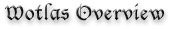
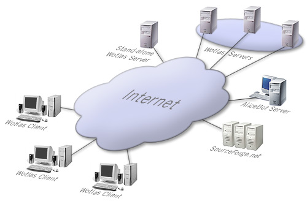
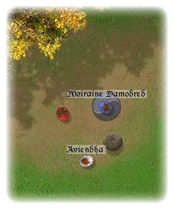

The
Wheel of Time is a famous book series made by Robert Jordan. The books
have been translated into multiple languages and tops the NY Times bestseller
lists on each release. You'll find lots of Wheel Of Time websites,
communities, mailing-lists all around the Internet.
For
us everything begun in march 2001 when a founder member of the french
Wheel Of Time community asked if we could create an interactive
chat for the mailing-list members. After a state of the art on the subject,
some brain storming and some development plans the Wheel Of
Time Light-And-Shadow project was born. Our
ambition at the time was to create a new kind of online multiplayer game
that would offer players enhanced ways to communicate and interact. Since
then the project has evolved to an international project with members
from France, USA, Germany and England. We released wotlas v1.0
on october 2001 and have since improved the robustness, quality and richness
of our product.
This
document will present you the different entities of the wotlas architecture
as described on the figure below. We will then end this overview by a
short summary of the features you'll find in wotlas v1.2 and those you
can expect in future releases.

Fig. 1 : The different entities of the wotlas architecture.
Let's
begin with the client side. To use wotlas, players just need to download
a package named Wotlas Client. This package contains the wotlas
program and all its associated data ( images, musics, game universe ).
To be able to enter the wotlas universe players need to create a game
account on one of the available servers. During this step they will define
their avatar's characteristics, choose a community (Aes Sedai, WolfBrother,
Chidren of the Light, etc... ), and define some visual attributes.
|  |
As
shown on the figure on the left, everything in the game is seen
from a top 2D view. Once you arrive in the Wheel of Time
world you'll be able to travel from town to town, visit buildings,
wander in streets, explore cellars, etc. You'll be able to meet
other players and chat, interact with them.
Because we wanted a very scalable system we limited each player's
awareness. The game maps are divided into small areas (locales,
just like in RING, MASSIVE systems) linked by gateways (open space
with or without doors) and we use them to perform intelligent and
efficient message routing. So you'll only
see players that are in your area or in immediately near areas.
This is a simple way to perform some interest management.
Also, to reduce the necessary bandwidth for each player, our movement
system is trajectory-based. You just have to click on the screen
and your player automatically moves towards your destination, avoiding
obstacles. For that we use an A* algorithm with a smoothing add-on.
Trajectories are rebuilt on remote clients with the consideration
of the Internet lag. Servers also keep their data up-to-date by
storing the player's current movement, but they never build trajectories
themselves.
|
This brings us to the server side. The list of the available servers can
be found on our SourceForge.net website. This way our client program
has an easy way to retrieve it. As it was said before our servers perform
message routing, control player actions and manage player accounts. Their
data is also made persistent by being saved to disk on creation and every
24 hours.
Wotlas
servers can work stand-alone or can team together in a peer-to-peer way
to share the different parts of a same game universe. In that case if
you travel to a new map, owned by another server, your account will be
transfered to this server and your network connection changed accordingly.
Finally
we recently added bots ( understand ro-bots ) to our wotlas servers.
Our bots don't really move for the moment ( they only turn to face
you ), on the other hand they can chat with you for hours. To make this
possible we use a chat robot service on a separate server. We chose Richard
Wallace's AliceBot
which is today one of the most promising artificial intelligence system...
We are currently working on specialized brains of our bots to make them
match some Wheel Of Time character behaviours.
To
end this overview of wotlas, here is a summary of the main game features
you'll find in the version 1.2.3 of our product :
- One world, 17 maps to explore.
- Seven character class : Aes Sedai, Warders, Children of the Light,
Asha'man, Wolf Brother, Aiel, Forsaken.
- Integrated chat with advanced features : threads, commands, voice
level, smileys, fanfare sounds.
- Possibility to leave a message attached to your player.
- Possibility to lie on your name.
- Possibility to create HTML macros.
Thanks
to the support we received from wotlas users and from the developers that
joined our team we'll be able to continue this project. Here are some
of the features we are working on : Objects, One Power effects, a knowledge
system, books you'll be able to write/read, libraries, some role playing
features, money, in-game post office, more maps, more graphical effects,
more characters, etc... and that's only a beginning... we have a huge
ToDo list...
|